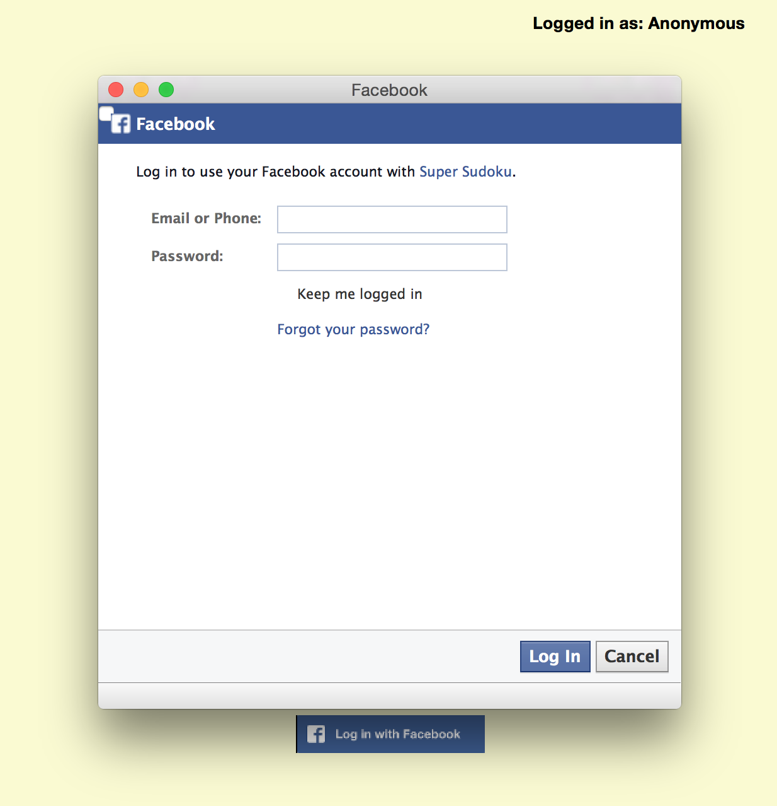

This is the home screen. From here, the user can create a new game, load a saved game, check out the instructions, statistics, leaderboard, and log into Facebook.

After selecting 'New Game', the user can choose from 4 difficulties: Easy, Medium, Hard, and Expert. This shows an easy game.
User added values appear in blue. Notes appear in green and are smaller. Values can be added via the buttons or keyboard input. Navigation can be done via clicking or arrow keys. Moves and notes can be undone and redone via keyboard shortcuts and the arrow buttons.

Adding a hint adds a black value. It also adds to the time. Each hint adds more time than the last.

User added values can be erased.
User is given options for ending, continuing, and resetting the game. Meanwhile, the game timer does not continue.
If the user would like to end the game, there is an option to save first so the game can be continued later.
The instructions for the game.
Upon clicking the log in with Facebook button, the user is prompted for credentials.
After successful login, the user's name appears in the top right corner of every screen. All statistics will now be logged to that user rather than 'Anonymous'.